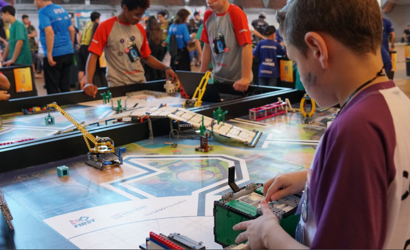
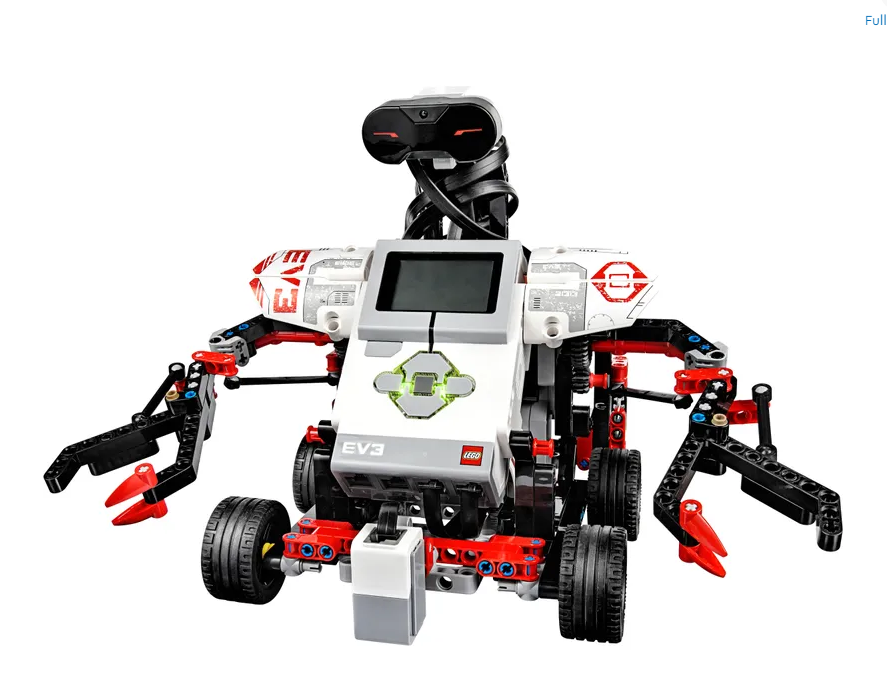
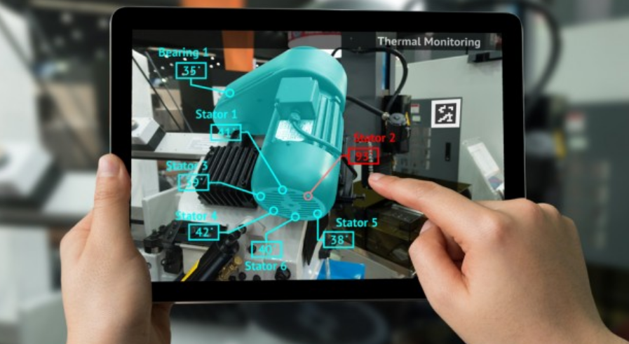
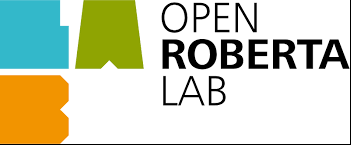

T.I
Torneio de robótica TLL
O Torneio de Robótica FIRST LEGO League Challenge desafia estudantes de 9 a 16 anos a buscarem soluções para problemas do dia a dia da sociedade moderna. Os temas são diferentes a cada temporada - em 2020, por exemplo, eles foram desafiados a repensarem espaços para exercícios, competições e brincadeiras. Os jovens, liderados por dois adultos, precisam trabalhar em sintonia tendo como base valores como respeito, ganho mútuo e competição amigável. Seguindo regras feitas especificamente para cada temporada, eles constroem robôs baseados na tecnologia LEGO Mindstorm, que devem ser programados para cumprir uma série de missões. Para participar, os times devem ter de dois a dez integrantes, que podem estar associados a uma escola, um clube, uma organização ou simplesmente ser formado por um grupo de amigos. O SESI recomenda o número mínimo de quatro competidores por equipe. A categoria Challenge da FIRST LEGO League é operacionalizada, no Brasil, pelo SESI, desde 2004. O programa tem ainda outras duas categorias, que são operacionalizadas, no Brasil, pela Educacional - Ecossistema de Tecnologia e Inovação
Lego Mindstorms
O produto LEGO Mindstorms é resultado de uma parceria de mais de uma década entre o Media Lab do Instituto de Tecnologia de Massachusetts (MIT) e o grupo LEGO. Este é constituído por um conjunto de peças da linha tradicional (tijolos cheios, placas, rodas) e da linha LEGO Technic (tijolos vazados, motores, eixos, engrenagens, polias e correntes), acrescido de sensores de toque, de intensidade luminosa e de temperatura, controlados por um processador programável, o módulo RCX (Robotic Command Explorer). O projeto foi originalmente inspirado por Seymour Papert, um dos fundadores do MIT, autor, na década de 1980, da obra "Mindstorms: Children, Computers and Powerful Ideas", onde apresentava as suas ideias de como os computadores iriam auxiliar o desenvolvimento intelectual de crianças e jovens. O conjunto permite criar robôs simples, passíveis de executar funções básicas pré-programadas. O módulo RCX processa comandos pré-programados em um computador, através de softwares específicos, como o RoboLAB (na versão educativa) ou o Robotics Invention System (na versão comercial), permitindo a interação da estrutura construída com o ambiente no qual se inscreve. O conjunto é fornecido com uma torre baseada em tecnologia de raios infravermelhos, que pode ser conectada a um computador pessoal de duas formas, através da porta USB ou através da porta serial. Em agosto de 2006, a LEGO lançou comercialmente a versão Mindstorms NXT, e depois em janeiro de 2013 foi lançada a versão mais avançada Mindstorms EV3. Estes conjuntos são utilizados, para além da função lúdica, com função didática em instituições de ensino tecnológico abordando a teoria e a prática de conteúdos direcionados para a introdução à robótica, permitindo os desenvolvimentos de projetos de pequeno e médio porte, estimulando a criatividade e a solução de problemas do quotidiano por parte dos alunos.
Realidade Virtual
A realidade virtual é uma tecnologia de interface avançada entre um usuário e o computador. Ela cria, a partir de um sistema computacional, um ambiente 3D mais próximo da realidade da pessoa, com interações mais naturais (efeitos visuais, sonoros e táteis, por exemplo). As interações dentro do ambiente virtual acontecem com o uso de capacete ou óculos de realidade virtual (óculos VR), luvas e outros dispositivos como mouse, teclado e monitor de vídeo.
Realidade Aumentada
A realidade aumentada (RA ou AR, na sigla em inglês) é a integração de elementos virtuais em cenas do mundo real, em geral por meio de câmeras e sensores de movimento. O recurso tem sido usado com frequência em aplicativos de redes sociais, com os filtros do Instagram e do Snapchat, por exemplo, e jogos como o Pokémon GO. A tecnologia também pode ser utilizada para fins educacionais e profissionais, em áreas como design de produtos, marketing e engenharia. Com ela, é possível visualizar objetos tridimensionais no mundo real, em geral a partir de telas, como as do celular, ou com óculos translúcidos de RA. Ou seja, a realidade aumentada é uma experiência interativa do mundo real. A ferramenta pode ser construtiva (agrega elementos ao ambiente natural) ou destrutiva (que mascara o ambiente natural). De modo geral, a realidade aumentada brinca com os sentidos do usuário e a percepção do que é real, através de sensações imersivas.
Open Roberta
O Google lançou recentemente na Alemanha o projeto "Open Roberta", uma plataforma baseada em nuvem visando ajudar estudantes e professores a programar pequenos robôs feitos partir dos kits de hardware "LEGO Mindstorms", produzidos pela companhia homônima. A Lego Education já disponibilizou 160 kits de 10 pacotes cada um para uso interno nas escolas da Alemanha, mas o Open Roberta permitirá que os estudantes possam dar continuidade aos projetos em casa também.
